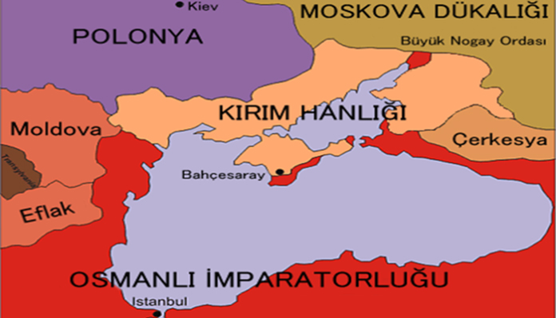
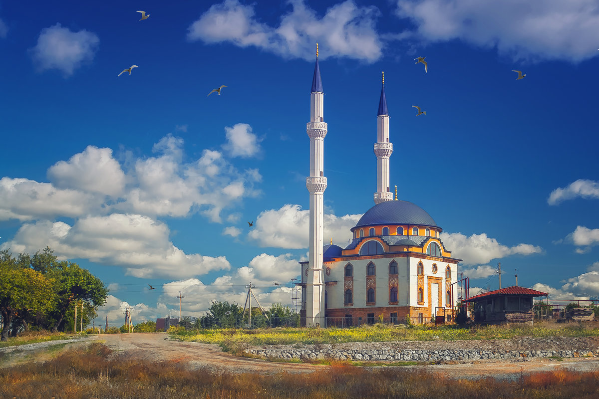

Tarih ve Kültür
Кırım – zengin tarih ve çok kültürlü bir mirasa sahip benzersiz bir bölgedir. Kırım Tatarları, bu kültürün önemli etnik bileşenlerinden birini oluşturur. İşte onların tarihleri ve kültürleri hakkında bazı bilgiler:
Kırım Tatarlarının Tarihi:
-
Antik Zamanlar: Kırım Tatarları, Hunlar ve göçebe Türk boylarıyla bağlantılı eski köklere sahiptir. Orta Çağ'da Altın Orda döneminde, Kırım Hanlığı adında kendi devletlerini kurdular.
-
Kırım Hanlığı: XIV. yüzyılda han Batu-Girey İslam'ı kabul etti ve o günden beri Kırım Tatarları Müslüman oldu. Kırım Hanlığı, bölgenin politik sahnesinde önemli bir oyuncu oldu, Osmanlı İmparatorluğu ve diğer komşu devletlerle etkileşimde bulundu.
-
Kırım'ın Osmanlı İmparatorluğu'na Katılması: 1475 yılında Osmanlı İmparatorluğu Kırım'ı fethederek topraklarına kattı.
-
Osmanlı İmparatorluğu ve Kırım: Kırım Hanlığı Osmanlı İmparatorluğu ile sıkı ilişkiler sürdürdü. Osmanlı sultanları, hanlara destek sağlayarak bölgedeki konumlarını güçlendirdi ve askeri yardım sağladı.
-
Kırım Savaşı: XIX. yüzyıl ortalarında, Kırım Savaşı Rusya ile müttefikleri arasında, Osmanlı İmparatorluğu dahil, gerçekleşti. Kırım Tatarları, bu savaşta Osmanlı İmparatorluğu tarafında aktif rol oynayarak bağımsızlıklarını sürdürmeye devam ettiler.
-
Rus İmparatorluğu ve Sovyet Dönemi: XVIII. yüzyılın sonlarında Rusya, Kırım'ı ilhak etti. Sovyetler Birliği döneminde, 1944'te Nazi işbirliğiyle yanlış ve haksızlık suçlanmaları nedeniyle Kırım Tatarları zorla Orta Asya'ya sürgüne gönderildi. Bu, Kırım Tatarlarının tarihinin trajik bir bölümü oldu.
-
Memleketlerine Dönüş: Sovyetler Birliği'nin çöküşünden sonra, 20. yüzyılın sonlarında ve Ukrayna'nın bağımsızlığını kazanmasının ardından, Kırım Tatarlarının tarihi topraklarına dönüş süreci başladı. Birçok Kırım Tatarı, kültürel ve sosyal kimliklerini yeniden inşa etme umuduyla Kırım'a geri döndü.
-
Günümüz: Şu anda Kırım Tatarları, Kırım'da önemli bir etnik grup olarak varlıklarını sürdürmektedir. Bölgedeki siyasi değişikliklerin etkisiyle, kültürel miraslarını koruma, haklarını savunma ve tanıma konularında çeşitli zorluklarla karşılaşıyorlar. Kırım, 2014 yılındaki olaylardan sonra Rusya tarafından ilhak edilince, bölge uluslararası tartışmaların odak noktası haline geldi.

Kırım Hanlığı, XIV. yüzyıl
Kırım Tatarlarının Kültürü:
-
Dil: Kırım Tatarları, Türk dilleri ailesine ait Kırım Tatarcasını konuşur. Bu dil, Latin ve Arap alfabesi temelinde kendi alfabelerine sahiptir ancak şu anda Kiril alfabesi daha çok kullanılmaktadır.
-
Din: İslam, Kırım Tatarlarının kültüründe önemli bir rol oynar. Camiler ve İslam gelenekleri, yaşam tarzlarını önemli ölçüde etkiler.
-
Mutfak: Geleneksel Kırım Tatar mutfağı, çeşitli yemekleri içerir; bunlar arasında «Aşı Çibörek», «Mantı» ve diğer Türk ve Orta Asya mutfağı etkilerini yansıtan yemekler bulunur.
-
Giyim ve Takılar: Geleneksel Kırım Tatar giyiminde canlı ulusal desenler ve süslemeler bulunur. Kadınlar genellikle ulusal başörtüleri ve takıları kullanır.

Kadır Camii, Simferopol